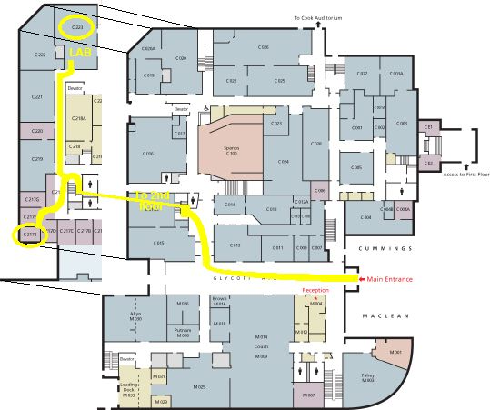
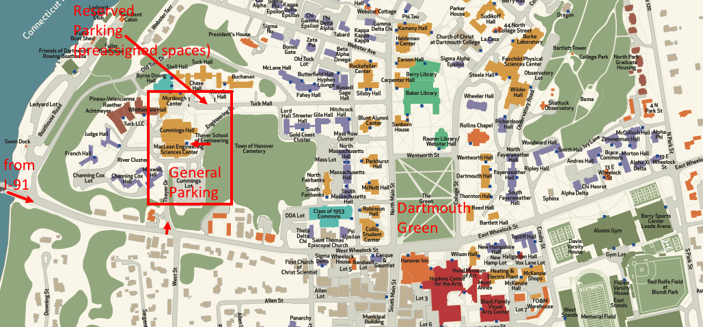

Finding the Dartmouth Microengineering Laboratory
Building directions to Microengineering Lab and Levey Office (path marked yellow from the front entrance)

Campus Map (The Thayer School of Engineering is in zone C5):
From I-91 Norwich VT/Hanover NH exit, cross the Connecticut River on
Ledyard bridge (distincitive large cement balls), start up the hill, and
take the second left onto Thayer Drive. At the top of the hill, Thayer School of Engineering
is in front of you. Park in the lot
to your right (or for under 5 minutes, follow the road past that lot to the front
of the building and park with flashers in the pull-out).
Enter the main door to the MacLean atrium between our two
buildings, and let the receptionist know who you
are visiting and ask her or him to call in a parking permit. I am in the older
building (Cummings Hall).
From Rte 120 North (off of I89), bear right at first light
in Hanover, next to COOP food store and Mobile station (South Park St.).
Turn left at second light (at the Berry Sports Center)
onto Wheelock street going west. Pass the
light at the Dartmouth Green/Hanover Inn corner, and proceed part way
down the hill. Turn right on Thayer drive. At the top of the hill, Thayer School of Engineering
is in front of you. Park in the lot
to your right (or for under 5 minutes, follow the road past that lot to the front
of the building and park with flashers in the pull-out).
Enter the main door to the MacLean atrium between our two
buildings, and let the receptionist know who you
are visiting and ask her or him to call in a parking permit. I am in the older
building (Cummings Hall).

Christopher.G.Levey[AT]dartmouth.edu